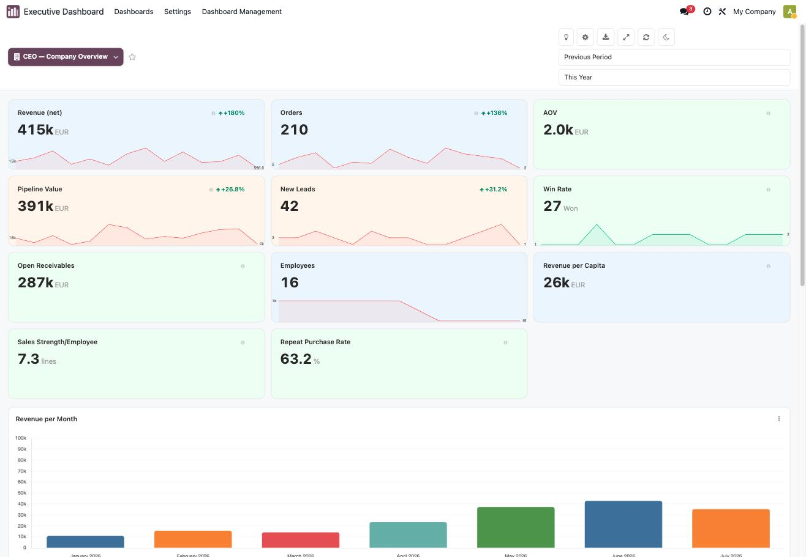
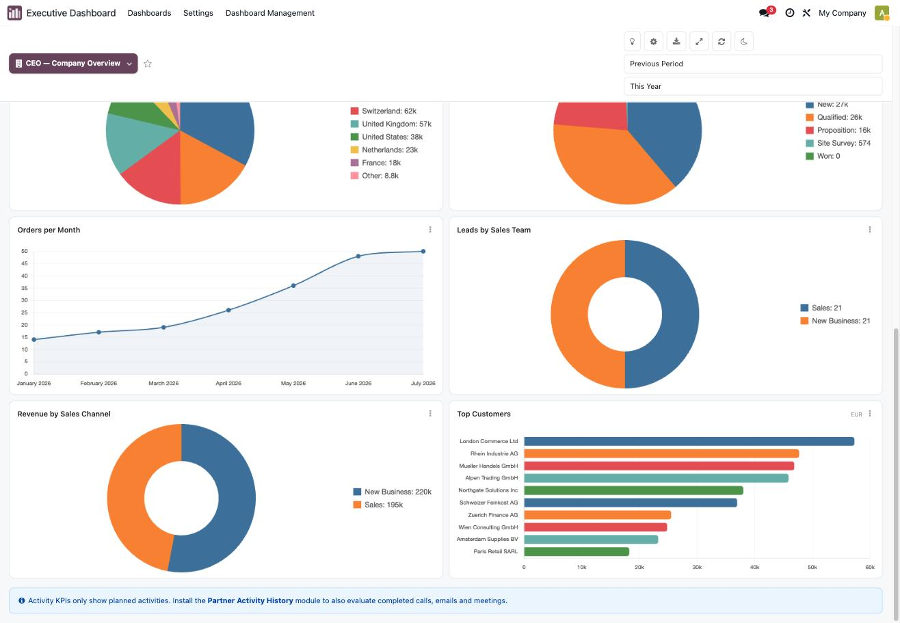
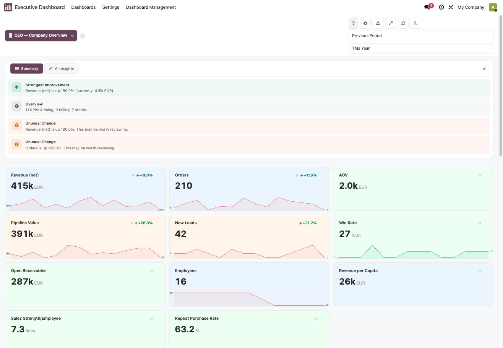
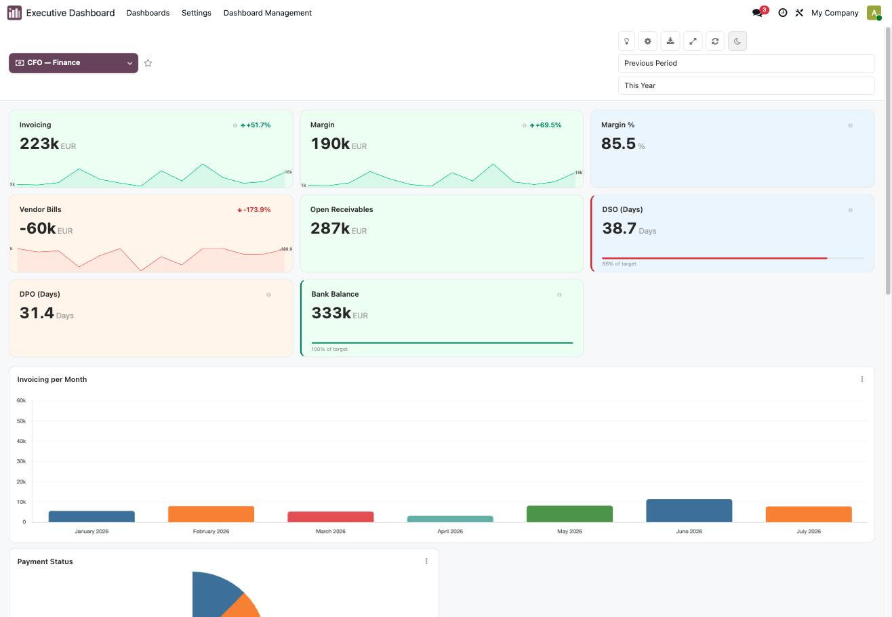
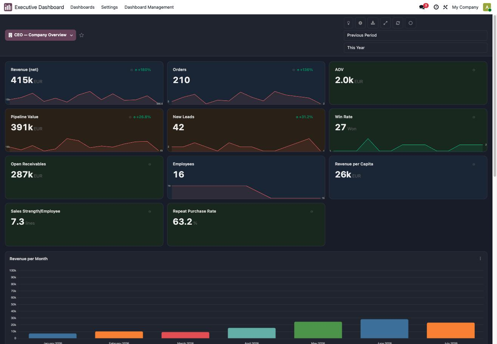
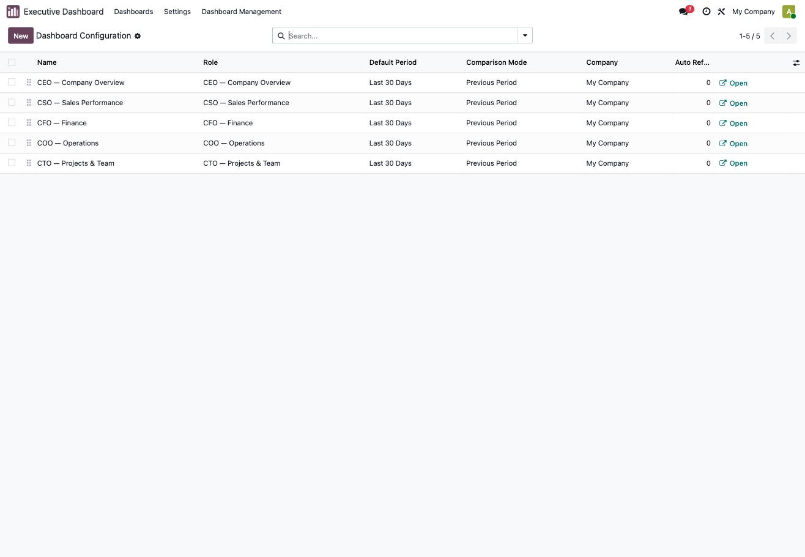

<section class="oe_container">
<div class="ed-page">

<style>
/* Executive Dashboard - App Store description page.
   Scoped under .ed-page so nothing leaks into the surrounding listing.
   No JavaScript, no external assets: fonts are system stacks, marks are inline SVG.
   All punctuation is written as HTML entities because this fragment is embedded
   in a page whose charset declaration we do not control.

   The palette is not invented for this page - it is the module's own status
   colours, the ones hardcoded in the scheduled-report renderer, plus the three
   default scorecard tints. The page is coloured the way the product is. */
.ed-page {
  --ink:      #17162A;
  --ink-60:   #56546B;
  --ink-30:   #9B99AC;
  --rule:     #E4E1DC;
  --paper:    #FAF9F7;
  --plum:     #5A2A44;
  --up:       #059669;
  --down:     #DC2626;
  --warn:     #D97706;
  --tint-blue:  #EFF6FF;
  --tint-green: #F0FFF4;
  --tint-amber: #FFF7ED;

  --sans: system-ui, -apple-system, "Segoe UI", Roboto, "Helvetica Neue", Arial, sans-serif;
  --mono: ui-monospace, SFMono-Regular, "SF Mono", Menlo, Consolas, "Liberation Mono", monospace;

  background: var(--paper);
  color: var(--ink);
  font-family: var(--sans);
  font-size: 16px;
  line-height: 1.6;
  -webkit-font-smoothing: antialiased;
}

/* Every figure on this page is set in tabular mono. Prose is sans.
   That split is the type system: it reads like a financial report,
   which is what the product produces. */
.ed-page .ed-num {
  font-family: var(--mono);
  font-variant-numeric: tabular-nums;
  letter-spacing: -0.02em;
}
.ed-page .ed-eyebrow {
  font-family: var(--mono);
  font-size: 11px;
  letter-spacing: 0.16em;
  text-transform: uppercase;
  color: var(--ink-30);
  margin: 0 0 14px;
}

.ed-page .ed-wrap { max-width: 1080px; margin: 0 auto; padding: 0 24px; }
.ed-page .ed-band { padding: 76px 0; border-top: 1px solid var(--rule); }
.ed-page .ed-band--first { padding-top: 64px; border-top: 0; }

.ed-page h1, .ed-page h2, .ed-page h3 { color: var(--ink); margin: 0; }
.ed-page h1 {
  font-size: 44px; line-height: 1.12; font-weight: 700; letter-spacing: -0.025em;
  max-width: 17ch;
}
.ed-page h2 {
  font-size: 27px; line-height: 1.25; font-weight: 650; letter-spacing: -0.018em;
  max-width: 24ch;
}
.ed-page h3 { font-size: 16px; font-weight: 650; letter-spacing: -0.005em; }
.ed-page p { margin: 0; color: var(--ink-60); }
.ed-page .ed-lede { font-size: 19px; line-height: 1.55; max-width: 56ch; margin-top: 18px; }
.ed-page .ed-note { font-size: 14px; }

/* Signature: the product's own KPI card, rebuilt in CSS.
   The hero is not a screenshot and not a big gradient number. It is the one
   element a user of this module looks at all day - value, unit, delta, spark -
   in the module's own tints. Figures match the demo data in the screenshots. */
.ed-page .ed-cards {
  display: grid; grid-template-columns: repeat(3, 1fr); gap: 14px; margin-top: 42px;
}
.ed-page .ed-card {
  border: 1px solid var(--rule); border-radius: 10px; padding: 18px 18px 12px;
  position: relative; overflow: hidden; background: #FFF;
}
.ed-page .ed-card--b { background: var(--tint-blue); }
.ed-page .ed-card--g { background: var(--tint-green); }
.ed-page .ed-card--a { background: var(--tint-amber); }
.ed-page .ed-card-top {
  display: flex; align-items: baseline; justify-content: space-between; gap: 10px;
}
.ed-page .ed-card-label {
  font-size: 13px; font-weight: 600; color: var(--ink); letter-spacing: -0.005em;
}
.ed-page .ed-delta { font-family: var(--mono); font-size: 12px; font-weight: 600; }
.ed-page .ed-delta--up { color: var(--up); }
.ed-page .ed-delta--down { color: var(--down); }
.ed-page .ed-card-value {
  font-family: var(--mono); font-variant-numeric: tabular-nums;
  font-size: 34px; font-weight: 600; letter-spacing: -0.04em; margin-top: 6px;
  display: flex; align-items: baseline; gap: 6px;
}
.ed-page .ed-card-unit { font-size: 13px; font-weight: 400; color: var(--ink-30); letter-spacing: 0; }
.ed-page .ed-spark { display: block; width: 100%; height: 34px; margin-top: 10px; }
.ed-page .ed-target { height: 3px; border-radius: 2px; background: #FFF; margin-top: 14px; overflow: hidden; }
.ed-page .ed-target span { display: block; height: 100%; }

/* Role strip. The markers are the five role codes the module actually ships:
   a typed set, not a numbered sequence - nothing here happens in an order. */
.ed-page .ed-roles { display: grid; grid-template-columns: repeat(5, 1fr); gap: 0; margin-top: 40px; }
.ed-page .ed-role { padding: 22px 20px 20px 0; border-top: 2px solid var(--ink); }
.ed-page .ed-role + .ed-role { padding-left: 20px; }
.ed-page .ed-role-code {
  font-family: var(--mono); font-size: 15px; font-weight: 700;
  letter-spacing: 0.06em; color: var(--plum); margin-bottom: 7px;
}
.ed-page .ed-role-name { font-size: 14px; font-weight: 600; margin-bottom: 5px; }
.ed-page .ed-role p { font-size: 13.5px; line-height: 1.5; }

.ed-page figure { margin: 0 0 34px; }
.ed-page figure img {
  width: 100%; height: auto; display: block;
  border: 1px solid var(--rule); border-radius: 8px;
}
.ed-page figcaption {
  font-family: var(--mono); font-size: 12px; color: var(--ink-30);
  margin-top: 11px; letter-spacing: 0.01em; line-height: 1.5;
}
.ed-page .ed-shots { display: block; }
.ed-page .ed-shots figure { margin-bottom: 34px; }

.ed-page .ed-caps { display: grid; grid-template-columns: repeat(3, 1fr); gap: 30px 34px; margin-top: 40px; }
.ed-page .ed-cap h3 { margin-bottom: 6px; }
.ed-page .ed-cap p { font-size: 14px; line-height: 1.55; }

/* Four typed source kinds, so they get a typed layout rather than a card grid. */
.ed-page .ed-src { border-top: 1px solid var(--rule); padding: 16px 0; display: flex; gap: 22px; align-items: baseline; }
.ed-page .ed-src:last-child { border-bottom: 1px solid var(--rule); }
.ed-page .ed-src-key {
  font-family: var(--mono); font-size: 12px; letter-spacing: 0.06em; text-transform: uppercase;
  color: var(--plum); flex: 0 0 132px; font-weight: 600;
}
.ed-page .ed-src p { font-size: 14.5px; }

.ed-page .ed-spec { width: 100%; border-collapse: collapse; margin-top: 34px; }
.ed-page .ed-spec th, .ed-page .ed-spec td {
  text-align: left; padding: 13px 0; border-bottom: 1px solid var(--rule); vertical-align: baseline;
}
.ed-page .ed-spec th {
  font-family: var(--mono); font-size: 11px; letter-spacing: 0.14em; text-transform: uppercase;
  color: var(--ink-30); font-weight: 500; width: 210px;
}
.ed-page .ed-spec td { font-size: 15px; }

.ed-page .ed-close { background: var(--ink); border-radius: 12px; padding: 44px 46px; margin-top: 12px; }
.ed-page .ed-close h2 { color: #FFF; max-width: 20ch; }
.ed-page .ed-close p { color: #B9B7C6; margin-top: 14px; max-width: 52ch; }
.ed-page .ed-close a { color: #FFF; text-decoration: underline; text-underline-offset: 3px; }
.ed-page .ed-price {
  font-family: var(--mono); font-variant-numeric: tabular-nums;
  font-size: 40px; font-weight: 600; letter-spacing: -0.04em; color: #FFF; margin-bottom: 4px;
}
.ed-page .ed-price-note {
  font-family: var(--mono); font-size: 12px; letter-spacing: 0.1em;
  text-transform: uppercase; color: #8F8DA0;
}

@media (max-width: 860px) {
  .ed-page h1 { font-size: 33px; }
  .ed-page h2 { font-size: 23px; }
  .ed-page .ed-band { padding: 52px 0; }
  .ed-page .ed-cards { grid-template-columns: 1fr; }
  .ed-page .ed-roles { grid-template-columns: 1fr 1fr; }
  .ed-page .ed-role, .ed-page .ed-role + .ed-role { padding-left: 0; padding-right: 16px; }
  .ed-page .ed-caps { grid-template-columns: 1fr; }
  .ed-page .ed-src { flex-direction: column; gap: 4px; }
  .ed-page .ed-src-key { flex-basis: auto; }
  .ed-page .ed-spec th { width: 130px; font-size: 10px; }
  .ed-page .ed-close { padding: 32px 26px; }
}
</style>


<div class="ed-band ed-band--first">
  <div class="ed-wrap">
    <p class="ed-eyebrow">Executive Dashboard &middot; Odoo 19</p>
    <h1>Your numbers, on one screen, without exporting anything.</h1>
    <p class="ed-lede">
      Five role dashboards with 89 preconfigured KPIs, charts and targets, reading
      live from the Odoo data you already have. Sales, invoicing, receivables,
      pipeline, projects and headcount side by side, each compared against the
      period before.
    </p>

    <div class="ed-cards">
      <div class="ed-card ed-card--b">
        <div class="ed-card-top">
          <span class="ed-card-label">Revenue (net)</span>
          <span class="ed-delta ed-delta--up">&#9650; 180.0%</span>
        </div>
        <div class="ed-card-value">415k<span class="ed-card-unit">EUR</span></div>
        <svg class="ed-spark" viewBox="0 0 240 34" preserveAspectRatio="none" aria-hidden="true" focusable="false">
          <polyline points="0,28 20,24 40,12 60,20 80,16 100,9 120,18 140,13 160,7 180,15 200,10 220,5 240,8"
                    fill="none" stroke="#5A2A44" stroke-opacity="0.42" stroke-width="1.5" stroke-linejoin="round"/>
        </svg>
      </div>

      <div class="ed-card ed-card--a">
        <div class="ed-card-top">
          <span class="ed-card-label">Pipeline Value</span>
          <span class="ed-delta ed-delta--up">&#9650; 26.8%</span>
        </div>
        <div class="ed-card-value">391k<span class="ed-card-unit">EUR</span></div>
        <svg class="ed-spark" viewBox="0 0 240 34" preserveAspectRatio="none" aria-hidden="true" focusable="false">
          <polyline points="0,30 20,27 40,29 60,18 80,13 100,21 120,19 140,22 160,14 180,9 200,17 220,11 240,6"
                    fill="none" stroke="#5A2A44" stroke-opacity="0.42" stroke-width="1.5" stroke-linejoin="round"/>
        </svg>
      </div>

      <div class="ed-card ed-card--g">
        <div class="ed-card-top">
          <span class="ed-card-label">Bank Balance</span>
          <span class="ed-delta">&nbsp;</span>
        </div>
        <div class="ed-card-value">333k<span class="ed-card-unit">EUR</span></div>
        <div class="ed-target"><span style="width:100%;background:#059669;"></span></div>
        <p class="ed-note ed-num" style="margin-top:7px;font-size:11.5px;">100% of target</p>
      </div>
    </div>
    <p class="ed-note" style="margin-top:14px;">
      Scorecards as the module renders them: value, unit, change against the
      comparison period, sparkline, and a target bar that turns amber or red when
      the KPI falls behind.
    </p>
  </div>
</div>


<div class="ed-band">
  <div class="ed-wrap">
    <p class="ed-eyebrow">What ships</p>
    <h2>Five dashboards, one for each seat at the table.</h2>
    <p class="ed-lede">
      Install it and the dashboards are already populated. Nothing to configure
      before the first look, because every KPI below is preconfigured against
      standard Odoo models.
    </p>

    <div class="ed-roles">
      <div class="ed-role">
        <div class="ed-role-code">CEO</div>
        <div class="ed-role-name">Company Overview</div>
        <p>Revenue, orders, AOV, pipeline, leads, win rate, headcount, revenue per capita.</p>
      </div>
      <div class="ed-role">
        <div class="ed-role-code">CFO</div>
        <div class="ed-role-name">Finance</div>
        <p>Invoicing, margin, vendor bills, receivables, DSO, DPO, bank balance.</p>
      </div>
      <div class="ed-role">
        <div class="ed-role-code">COO</div>
        <div class="ed-role-name">Operations</div>
        <p>Purchasing, deliveries, goods receipts, open orders, inventory value.</p>
      </div>
      <div class="ed-role">
        <div class="ed-role-code">CTO</div>
        <div class="ed-role-name">Projects &amp; Team</div>
        <p>Active projects, open tasks, timesheets, utilisation, team by department.</p>
      </div>
      <div class="ed-role">
        <div class="ed-role-code">CSO</div>
        <div class="ed-role-name">Sales Performance</div>
        <p>Sales cycle, repeat purchase rate, top customers, revenue by channel.</p>
      </div>
    </div>
  </div>
</div>


<div class="ed-band">
  <div class="ed-wrap">
    <p class="ed-eyebrow">In the product</p>
    <h2>A native Odoo app, not an embedded report.</h2>

    <figure style="margin-top:40px;">
      
      <figcaption>CEO &mdash; Company Overview, period set to This Year, compared against the previous period.</figcaption>
    </figure>

    <div class="ed-shots">
      <figure>
        
        <figcaption>Bar, line, pie, doughnut and horizontal bar charts. Click a segment to drill into the underlying records.</figcaption>
      </figure>
      <figure>
        
        <figcaption>Insights reads the current period and flags what moved. Rule-based by default, so no API key is needed.</figcaption>
      </figure>
      <figure>
        
        <figcaption>CFO &mdash; Finance. DSO sits at 86% of target, so its bar reads red.</figcaption>
      </figure>
      <figure>
        
        <figcaption>Dark mode, per user. Also fullscreen, auto-refresh, and CSV or PNG export.</figcaption>
      </figure>
    </div>

    <figure style="margin-bottom:0;">
      
      <figcaption>Every dashboard is an ordinary Odoo record: rename it, reorder KPIs by drag and drop, restrict it to user groups, or build your own from scratch.</figcaption>
    </figure>
  </div>
</div>


<div class="ed-band">
  <div class="ed-wrap">
    <p class="ed-eyebrow">Custom KPIs</p>
    <h2>Four ways to define a number.</h2>
    <p class="ed-lede">
      The preconfigured KPIs are a starting point. Anything you can express
      against your own database becomes a card, a chart or a gauge.
    </p>

    <div style="margin-top:38px;">
      <div class="ed-src">
        <div class="ed-src-key">Model</div>
        <p>Aggregate any Odoo model &mdash; sum, average, count, min or max &mdash; over a domain you write, grouped by any field for charts.</p>
      </div>
      <div class="ed-src">
        <div class="ed-src-key">Formula</div>
        <p>Compose KPIs from other KPIs. Margin percentage, average order value and revenue per employee all ship this way.</p>
      </div>
      <div class="ed-src">
        <div class="ed-src-key">SQL</div>
        <p>A SELECT returning one value, with the active period injected as placeholders. For figures the ORM cannot reach cheaply.</p>
      </div>
      <div class="ed-src">
        <div class="ed-src-key">Bank balance</div>
        <p>Reads the account behind a bank journal, so the balance matches your books rather than the journal&rsquo;s own movements.</p>
      </div>
    </div>
  </div>
</div>


<div class="ed-band">
  <div class="ed-wrap">
    <p class="ed-eyebrow">Also included</p>
    <h2>The parts you would otherwise build yourself.</h2>

    <div class="ed-caps">
      <div class="ed-cap">
        <h3>Period comparison</h3>
        <p>Compare against the previous period, the same period last year, or a budget figure you set per KPI.</p>
      </div>
      <div class="ed-cap">
        <h3>Targets and status</h3>
        <p>Give a KPI a target with amber and red thresholds. The card shows how far along it is at a glance.</p>
      </div>
      <div class="ed-cap">
        <h3>Time filters</h3>
        <p>7, 30 or 90 days, this month, quarter or year, last year, all time, or a custom range.</p>
      </div>
      <div class="ed-cap">
        <h3>Scheduled email reports</h3>
        <p>Daily, weekly or monthly. Recipients get the scorecards as a formatted table, no login required.</p>
      </div>
      <div class="ed-cap">
        <h3>AI Insights</h3>
        <p>Rule-based analysis out of the box. Add an Anthropic or OpenAI key for a written read of the period.</p>
      </div>
      <div class="ed-cap">
        <h3>Industry templates</h3>
        <p>Four starting sets &mdash; e-commerce, services, manufacturing, retail &mdash; applied as a new dashboard in one click.</p>
      </div>
      <div class="ed-cap">
        <h3>Notes on KPIs</h3>
        <p>Leave a comment on a number so the next person reading it knows why it moved.</p>
      </div>
      <div class="ed-cap">
        <h3>Multi-company</h3>
        <p>Dashboards are company-scoped and follow the active company selection.</p>
      </div>
      <div class="ed-cap">
        <h3>Access control</h3>
        <p>Restrict a dashboard to specific user groups. Empty means every internal user sees it.</p>
      </div>
    </div>
  </div>
</div>


<div class="ed-band">
  <div class="ed-wrap">
    <p class="ed-eyebrow">Technical</p>
    <h2>What you are installing.</h2>

    <table class="ed-spec">
      <tbody>
        <tr><th scope="row">Odoo version</th><td class="ed-num">19.0</td></tr>
        <tr><th scope="row">Licence</th><td class="ed-num">OPL-1</td></tr>
        <tr><th scope="row">Dashboards</th><td>5 preconfigured, unlimited custom</td></tr>
        <tr><th scope="row">KPIs</th><td>89 preconfigured, unlimited custom</td></tr>
        <tr><th scope="row">Chart types</th><td>Bar, horizontal bar, line, pie, doughnut, gauge, table</td></tr>
        <tr><th scope="row">Depends on</th><td class="ed-num">base, web, mail, sale, account, stock, purchase, crm, project, hr</td></tr>
        <tr><th scope="row">Languages</th><td>English, German</td></tr>
        <tr><th scope="row">Test suite</th><td>93 automated tests</td></tr>
        <tr><th scope="row">External services</th><td>None required. AI Insights optionally calls Anthropic or OpenAI with a key you supply.</td></tr>
        <tr><th scope="row">Your data</th><td>Stays in your database. No activation key, no phone-home, no lock-in.</td></tr>
      </tbody>
    </table>
  </div>
</div>


<div class="ed-band" style="padding-bottom:76px;">
  <div class="ed-wrap">
    <div class="ed-close">
      <div class="ed-price">&euro;199</div>
      <p class="ed-price-note">One-time purchase &middot; per installation</p>
      <h2 style="margin-top:26px;">Built by an Odoo partner who runs it in production.</h2>
      <p>
        KLGM Consulting builds and maintains Odoo implementations for mid-sized
        companies. This module came out of that work rather than a product
        roadmap: every KPI in it answers a question a real client asked.
      </p>
      <p style="margin-top:18px;">
        Questions before buying, or a KPI you need and cannot express?
        Write to <a href="mailto:support@klgm-consulting.de">support@klgm-consulting.de</a>.
      </p>
    </div>
  </div>
</div>

</div>
</section>
